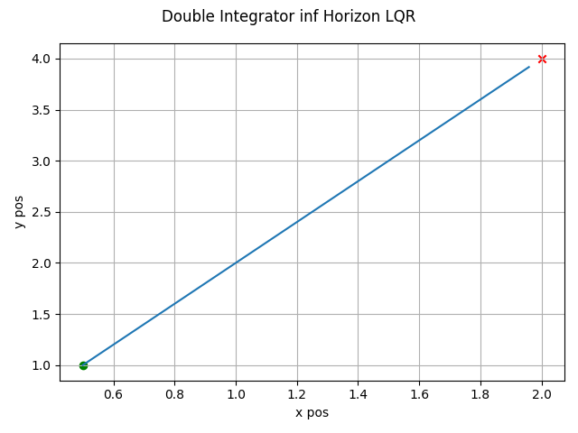
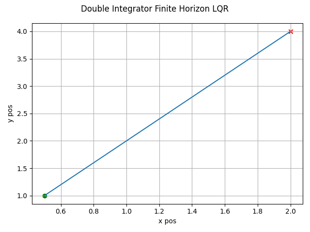
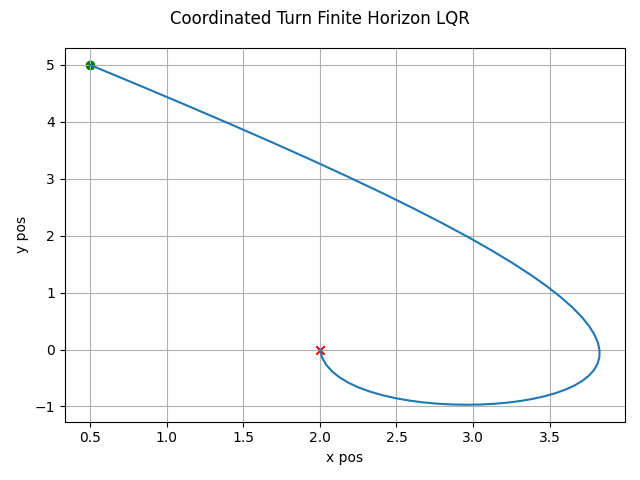
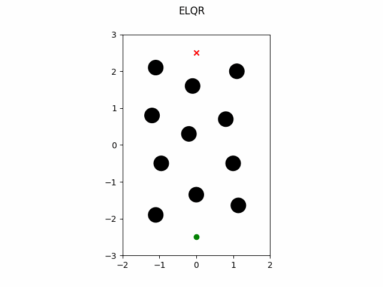
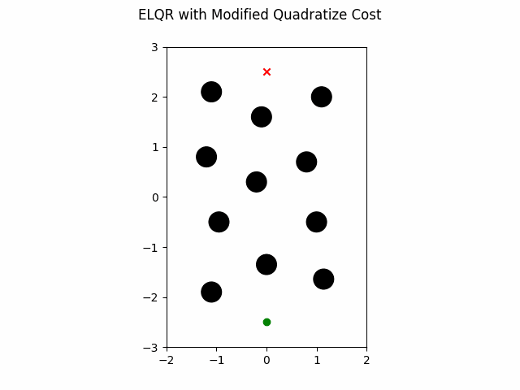
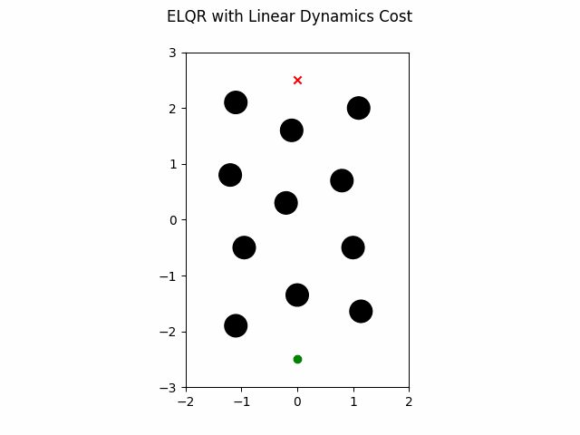

Control Examples
LQR Infinite Horizon Linear Dyanmics
The LQR algorithm can be run for the infinite horizon case using linear dynamics with the following. Note the state trajectory output can be used as a motion plan.
1def linear_inf_horizon():
2 import numpy as np
3
4 import gncpy.dynamics.basic as gdyn
5 from gncpy.control import LQR
6
7 cur_time = 0
8 dt = 0.1
9 cur_state = np.array([0.5, 1, 0, 0]).reshape((-1, 1))
10 end_state = np.array([2, 4, 0, 0]).reshape((-1, 1))
11 time_horizon = float("inf")
12
13 # Create dynamics object
14 dynObj = gdyn.DoubleIntegrator()
15 dynObj.control_model = lambda _t, *_args: np.array(
16 [[0, 0], [0, 0], [1, 0], [0, 1]]
17 )
18 state_args = (dt,)
19
20 # Setup LQR Object
21 u_nom = np.zeros((2, 1))
22 Q = 10 * np.eye(len(dynObj.state_names))
23 R = 0.5 * np.eye(u_nom.size)
24 lqr = LQR(time_horizon=time_horizon)
25 # need to set dt here so the controller can generate a state trajectory
26 lqr.set_state_model(u_nom, dynObj=dynObj, dt=dt)
27 lqr.set_cost_model(Q, R)
28
29 u, cost, state_traj, ctrl_signal = lqr.calculate_control(
30 cur_time,
31 cur_state,
32 end_state=end_state,
33 end_state_tol=0.1,
34 check_inds=[0, 1],
35 state_args=state_args,
36 provide_details=True,
37 )
38
39 return state_traj, end_state
which gives this as output.
LQR Finite Horzon Linear Dynamics
The LQR algorithm can be run for the finite horizon case using non-linear dynamics with the following. Note the state trajectory output can be used as a motion plan.
1def linear_finite_horizon():
2 import numpy as np
3
4 import gncpy.dynamics.basic as gdyn
5 from gncpy.control import LQR
6
7 cur_time = 0
8 dt = 0.1
9 cur_state = np.array([0.5, 1, 0, 0]).reshape((-1, 1))
10 end_state = np.array([2, 4, 0, 0]).reshape((-1, 1))
11 time_horizon = 3 * dt
12
13 # Create dynamics object
14 dynObj = gdyn.DoubleIntegrator()
15 dynObj.control_model = lambda _t, *_args: np.array(
16 [[0, 0], [0, 0], [1, 0], [0, 1]]
17 )
18 state_args = (dt,)
19 inv_state_args = (-dt, )
20
21 # Setup LQR Object
22 u_nom = np.zeros((2, 1))
23 Q = 200 * np.eye(len(dynObj.state_names))
24 R = 0.01 * np.eye(u_nom.size)
25 lqr = LQR(time_horizon=time_horizon)
26 # need to set dt here so the controller can generate a state trajectory
27 lqr.set_state_model(u_nom, dynObj=dynObj, dt=dt)
28 lqr.set_cost_model(Q, R)
29
30 u, cost, state_traj, ctrl_signal = lqr.calculate_control(
31 cur_time,
32 cur_state,
33 end_state=end_state,
34 state_args=state_args,
35 inv_state_args=inv_state_args,
36 provide_details=True,
37 )
38
39 return state_traj, end_state
which gives this as output.
LQR Finite Horzon Non-linear Dynamics
The LQR algorithm can be run for the finite horizon case using non-linear dynamics with the following. Note the state trajectory output can be used as a motion plan.
1def nonlin_finite_hor():
2 import numpy as np
3
4 import gncpy.dynamics.basic as gdyn
5 from gncpy.control import LQR
6
7 d2r = np.pi / 180
8
9 cur_time = 0
10 dt = 0.1
11 cur_state = np.array([0.5, 0, 5, 45 * d2r]).reshape((-1, 1))
12 end_state = np.array([2, 0, 0, 0]).reshape((-1, 1))
13 time_horizon = 50 * dt
14
15 # Create dynamics object
16 dynObj = gdyn.CurvilinearMotion()
17
18 # Setup LQR Object
19 u_nom = np.zeros((2, 1))
20 Q = np.diag([200, 2000, 200, 2000])
21 R = 0.01 * np.eye(u_nom.size)
22 lqr = LQR(time_horizon=time_horizon)
23 # need to set dt here so the controller can generate a state trajectory
24 lqr.set_state_model(u_nom, dynObj=dynObj, dt=dt)
25 lqr.set_cost_model(Q, R)
26
27 u, cost, state_traj, ctrl_signal = lqr.calculate_control(
28 cur_time,
29 cur_state,
30 end_state=end_state,
31 provide_details=True,
32 )
33
34 return state_traj, end_state
which gives this as output.
ELQR
The ELQR algorithm can be run for a finite horizon with non-linear dynamics and a non-quadratic cost with the following. Note the state trajectory output can be used as a motion plan. This version does not modify the quadratization process.
1def basic():
2 import numpy as np
3
4 import gncpy.plotting as gplot
5 import gncpy.control as gctrl
6 from gncpy.dynamics.basic import IRobotCreate
7
8 tt = 0 # starting time when calculating control
9 dt = 1 / 6
10 time_horizon = 150 * dt # run for 150 timesteps
11
12 # define starting and ending state for control calculation
13 end_state = np.array([0, 2.5, np.pi]).reshape((3, 1))
14 start_state = np.array([0, -2.5, np.pi]).reshape((3, 1))
15
16 # define nominal control input
17 u_nom = np.zeros((2, 1))
18
19 # define dynamics
20 # IRobot Create has a dt that can be set here or it can be set by the control
21 # algorithm
22 dynObj = IRobotCreate(wheel_separation=0.258, radius=0.335 / 2.0)
23
24 # define some circular obstacles with center pos and radius (x, y, radius)
25 obstacles = np.array(
26 [
27 [0, -1.35, 0.2],
28 [1.0, -0.5, 0.2],
29 [-0.95, -0.5, 0.2],
30 [-0.2, 0.3, 0.2],
31 [0.8, 0.7, 0.2],
32 [1.1, 2.0, 0.2],
33 [-1.2, 0.8, 0.2],
34 [-1.1, 2.1, 0.2],
35 [-0.1, 1.6, 0.2],
36 [-1.1, -1.9, 0.2],
37 [(10 + np.sqrt(2)) / 10, (-15 - np.sqrt(2)) / 10, 0.2],
38 ]
39 )
40
41 # define enviornment bounds for the robot
42 bottom_left = np.array([-2, -3])
43 top_right = np.array([2, 3])
44
45 # define Q and R weights for using standard cost function
46 # Q = np.diag([50, 50, 0.4 * np.pi / 2])
47 Q = 50 * np.eye(3)
48 R = 0.6 * np.eye(u_nom.size)
49
50 # define non-quadratic term for cost function
51 # has form: (tt, state, ctrl_input, end_state, is_initial, is_final, *args)
52 obs_factor = 1
53 scale_factor = 1
54 cost_args = (obstacles, obs_factor, scale_factor, bottom_left, top_right)
55
56 def non_quadratic_cost(
57 tt,
58 state,
59 ctrl_input,
60 end_state,
61 is_initial,
62 is_final,
63 _obstacles,
64 _obs_factor,
65 _scale_factor,
66 _bottom_left,
67 _top_right,
68 ):
69 cost = 0
70 # cost for obstacles
71 for obs in _obstacles:
72 diff = state.ravel()[0:2] - obs[0:2]
73 dist = np.sqrt(np.sum(diff * diff))
74 # signed distance is negative if the robot is within the obstacle
75 signed_dist = (dist - dynObj.radius) - obs[2]
76 if signed_dist > 0:
77 continue
78 cost += _obs_factor * np.exp(-_scale_factor * signed_dist).item()
79
80 # add cost for going out of bounds
81 for ii, b in enumerate(_bottom_left):
82 dist = (state[ii] - b) - dynObj.radius
83 cost += _obs_factor * np.exp(-_scale_factor * dist).item()
84
85 for ii, b in enumerate(_top_right):
86 dist = (b - state[ii]) - dynObj.radius
87 cost += _obs_factor * np.exp(-_scale_factor * dist).item()
88
89 return cost
90
91 # create control obect
92 elqr = gctrl.ELQR(time_horizon=time_horizon)
93 elqr.set_state_model(u_nom, dynObj=dynObj)
94 elqr.dt = dt # set here or within the dynamic object
95 elqr.set_cost_model(Q=Q, R=R, non_quadratic_fun=non_quadratic_cost)
96
97 # create figure with obstacles to plot animation on
98 fig = plt.figure()
99 fig.add_subplot(1, 1, 1)
100 fig.axes[0].set_aspect("equal", adjustable="box")
101 fig.axes[0].set_xlim((bottom_left[0], top_right[0]))
102 fig.axes[0].set_ylim((bottom_left[1], top_right[1]))
103 fig.axes[0].scatter(
104 start_state[0], start_state[1], marker="o", color="g", zorder=1000
105 )
106 for obs in obstacles:
107 c = Circle(obs[:2], radius=obs[2], color="k", zorder=1000)
108 fig.axes[0].add_patch(c)
109 plt_opts = gplot.init_plotting_opts(f_hndl=fig)
110 gplot.set_title_label(fig, 0, plt_opts, ttl="ELQR")
111
112 # calculate control
113 u, cost, state_trajectory, control_signal, fig, frame_list = elqr.calculate_control(
114 tt,
115 start_state,
116 end_state,
117 cost_args=cost_args,
118 provide_details=True,
119 show_animation=True,
120 save_animation=True,
121 plt_inds=[0, 1],
122 fig=fig,
123 )
124
125 return frame_list
which gives this as output.
ELQR Modified Quadratization
The ELQR algorithm can be run for a finite horizon with non-linear dynamics and a non-quadratic cost with the following. Note the state trajectory output can be used as a motion plan. This version does modifies the quadratization process.
1def modify_quadratize():
2 import numpy as np
3
4 import gncpy.plotting as gplot
5 import gncpy.control as gctrl
6 from gncpy.dynamics.basic import IRobotCreate
7
8 tt = 0 # starting time when calculating control
9 dt = 1 / 6
10 time_horizon = 150 * dt # run for 150 timesteps
11
12 # define starting and ending state for control calculation
13 end_state = np.array([0, 2.5, np.pi]).reshape((3, 1))
14 start_state = np.array([0, -2.5, np.pi]).reshape((3, 1))
15
16 # define nominal control input
17 u_nom = np.zeros((2, 1))
18
19 # define dynamics
20 # IRobot Create has a dt that can be set here or it can be set by the control
21 # algorithm
22 dynObj = IRobotCreate(wheel_separation=0.258, radius=0.335 / 2.0)
23
24 # define some circular obstacles with center pos and radius (x, y, radius)
25 obstacles = np.array(
26 [
27 [0, -1.35, 0.2],
28 [1.0, -0.5, 0.2],
29 [-0.95, -0.5, 0.2],
30 [-0.2, 0.3, 0.2],
31 [0.8, 0.7, 0.2],
32 [1.1, 2.0, 0.2],
33 [-1.2, 0.8, 0.2],
34 [-1.1, 2.1, 0.2],
35 [-0.1, 1.6, 0.2],
36 [-1.1, -1.9, 0.2],
37 [(10 + np.sqrt(2)) / 10, (-15 - np.sqrt(2)) / 10, 0.2],
38 ]
39 )
40
41 # define enviornment bounds for the robot
42 bottom_left = np.array([-2, -3])
43 top_right = np.array([2, 3])
44
45 # define Q and R weights for using standard cost function
46 Q = 50 * np.eye(len(dynObj.state_names))
47 R = 0.6 * np.eye(u_nom.size)
48
49 # define non-quadratic term for cost function
50 # has form: (tt, state, ctrl_input, end_state, is_initial, is_final, *args)
51 obs_factor = 1
52 scale_factor = 1
53 cost_args = (obstacles, obs_factor, scale_factor, bottom_left, top_right)
54
55 def non_quadratic_cost(
56 tt,
57 state,
58 ctrl_input,
59 end_state,
60 is_initial,
61 is_final,
62 _obstacles,
63 _obs_factor,
64 _scale_factor,
65 _bottom_left,
66 _top_right,
67 ):
68 cost = 0
69 # cost for obstacles
70 for obs in _obstacles:
71 diff = state.ravel()[0:2] - obs[0:2]
72 dist = np.sqrt(np.sum(diff * diff))
73 # signed distance is negative if the robot is within the obstacle
74 signed_dist = (dist - dynObj.radius) - obs[2]
75 if signed_dist > 0:
76 continue
77 cost += _obs_factor * np.exp(-_scale_factor * signed_dist).item()
78
79 # add cost for going out of bounds
80 for ii, b in enumerate(_bottom_left):
81 dist = (state[ii] - b) - dynObj.radius
82 cost += _obs_factor * np.exp(-_scale_factor * dist).item()
83
84 for ii, b in enumerate(_top_right):
85 dist = (b - state[ii]) - dynObj.radius
86 cost += _obs_factor * np.exp(-_scale_factor * dist).item()
87
88 return cost
89
90 # define modifications for quadratizing the cost function
91 def quad_modifier(itr, tt, P, Q, R, q, r):
92 rot_cost = 0.4
93 # only modify if within the first 2 iterations
94 if itr < 2:
95 Q[-1, -1] = rot_cost
96 q[-1] = -rot_cost * np.pi / 2
97
98 return P, Q, R, q, r
99
100 # create control obect
101 elqr = gctrl.ELQR(time_horizon=time_horizon)
102 elqr.set_state_model(u_nom, dynObj=dynObj)
103 elqr.dt = dt # set here or within the dynamic object
104 elqr.set_cost_model(
105 Q=Q, R=R, non_quadratic_fun=non_quadratic_cost, quad_modifier=quad_modifier
106 )
107
108 fig = plt.figure()
109 fig.add_subplot(1, 1, 1)
110 fig.axes[0].set_aspect("equal", adjustable="box")
111 fig.axes[0].set_xlim((bottom_left[0], top_right[0]))
112 fig.axes[0].set_ylim((bottom_left[1], top_right[1]))
113 fig.axes[0].scatter(
114 start_state[0], start_state[1], marker="o", color="g", zorder=1000
115 )
116 for obs in obstacles:
117 c = Circle(obs[:2], radius=obs[2], color="k", zorder=1000)
118 fig.axes[0].add_patch(c)
119 plt_opts = gplot.init_plotting_opts(f_hndl=fig)
120 gplot.set_title_label(fig, 0, plt_opts, ttl="ELQR with Modified Quadratize Cost")
121
122 # calculate control
123 u, cost, state_trajectory, control_signal, fig, frame_list = elqr.calculate_control(
124 tt,
125 start_state,
126 end_state,
127 cost_args=cost_args,
128 provide_details=True,
129 show_animation=True,
130 save_animation=True,
131 plt_inds=[0, 1],
132 fig=fig,
133 )
134
135 return frame_list
which gives this as output.
ELQR Linear Dynamics
The ELQR algorithm can be run for a finite horizon with linear dynamics and a non-quadratic cost with the following. Note the state trajectory output can be used as a motion plan. This version uses dynamics with a constraint on the states in addition to the obstacles in the environment.
1def linear():
2 import numpy as np
3
4 import gncpy.plotting as gplot
5 import gncpy.control as gctrl
6 from gncpy.dynamics.basic import DoubleIntegrator
7
8 tt = 0 # starting time when calculating control
9 dt = 1 / 6
10 time_horizon = 20 * dt # run for 150 timesteps
11
12 # define starting and ending state for control calculation
13 end_state = np.array([0, 2.5, 0, 0]).reshape((-1, 1))
14 start_state = np.array([0, -2.5, 0, 0]).reshape((-1, 1))
15
16 # define nominal control input
17 u_nom = np.zeros((2, 1))
18
19 # define dynamics
20 dynObj = DoubleIntegrator()
21
22 # set control model
23 dynObj.control_model = lambda t, *args: np.array(
24 [[0, 0], [0, 0], [1, 0], [0, 1]], dtype=float
25 )
26
27 # set a state constraint on the velocities
28 dynObj.state_constraint = lambda t, x: np.vstack(
29 (
30 x[:2],
31 np.max(
32 (np.min((x[2:], 2 * np.ones((2, 1))), axis=0), -2 * np.ones((2, 1))),
33 axis=0,
34 ),
35 )
36 )
37
38 # define some circular obstacles with center pos and radius (x, y, radius)
39 obstacles = np.array(
40 [
41 [0, -1.35, 0.2],
42 [1.0, -0.5, 0.2],
43 [-0.95, -0.5, 0.2],
44 [-0.2, 0.3, 0.2],
45 [0.8, 0.7, 0.2],
46 [1.1, 2.0, 0.2],
47 [-1.2, 0.8, 0.2],
48 [-1.1, 2.1, 0.2],
49 [-0.1, 1.6, 0.2],
50 [-1.1, -1.9, 0.2],
51 [(10 + np.sqrt(2)) / 10, (-15 - np.sqrt(2)) / 10, 0.2],
52 ]
53 )
54
55 # define enviornment bounds for the robot
56 bottom_left = np.array([-2, -3])
57 top_right = np.array([2, 3])
58
59 # define Q and R weights for using standard cost function
60 Q = 10 * np.eye(len(dynObj.state_names))
61 R = 0.6 * np.eye(u_nom.size)
62
63 # define non-quadratic term for cost function
64 # has form: (tt, state, ctrl_input, end_state, is_initial, is_final, *args)
65 obs_factor = 1
66 scale_factor = 1
67 cost_args = (obstacles, obs_factor, scale_factor, bottom_left, top_right)
68
69 def non_quadratic_cost(
70 tt,
71 state,
72 ctrl_input,
73 end_state,
74 is_initial,
75 is_final,
76 _obstacles,
77 _obs_factor,
78 _scale_factor,
79 _bottom_left,
80 _top_right,
81 ):
82 cost = 0
83 radius = 0.335 / 2.0
84 # cost for obstacles
85 for obs in _obstacles:
86 diff = state.ravel()[0:2] - obs[0:2]
87 dist = np.sqrt(np.sum(diff * diff))
88 # signed distance is negative if the robot is within the obstacle
89 signed_dist = (dist - radius) - obs[2]
90 if signed_dist > 0:
91 continue
92 cost += _obs_factor * np.exp(-_scale_factor * signed_dist).item()
93
94 # add cost for going out of bounds
95 for ii, b in enumerate(_bottom_left):
96 dist = (state[ii] - b) - radius
97 cost += _obs_factor * np.exp(-_scale_factor * dist).item()
98
99 for ii, b in enumerate(_top_right):
100 dist = (b - state[ii]) - radius
101 cost += _obs_factor * np.exp(-_scale_factor * dist).item()
102
103 return cost
104
105 # create control obect
106 elqr = gctrl.ELQR(time_horizon=time_horizon)
107 elqr.set_state_model(u_nom, dynObj=dynObj)
108 elqr.dt = dt # set here or within the dynamic object
109 elqr.set_cost_model(Q=Q, R=R, non_quadratic_fun=non_quadratic_cost)
110
111 fig = plt.figure()
112 fig.add_subplot(1, 1, 1)
113 fig.axes[0].set_aspect("equal", adjustable="box")
114 fig.axes[0].set_xlim((bottom_left[0], top_right[0]))
115 fig.axes[0].set_ylim((bottom_left[1], top_right[1]))
116 fig.axes[0].scatter(
117 start_state[0], start_state[1], marker="o", color="g", zorder=1000
118 )
119 for obs in obstacles:
120 c = Circle(obs[:2], radius=obs[2], color="k", zorder=1000)
121 fig.axes[0].add_patch(c)
122 plt_opts = gplot.init_plotting_opts(f_hndl=fig)
123 gplot.set_title_label(fig, 0, plt_opts, ttl="ELQR with Linear Dynamics Cost")
124
125 # calculate control
126 u, cost, state_trajectory, control_signal, fig, frame_list = elqr.calculate_control(
127 tt,
128 start_state,
129 end_state,
130 state_args=(dt,),
131 cost_args=cost_args,
132 inv_state_args=(-dt,),
133 provide_details=True,
134 show_animation=True,
135 save_animation=True,
136 plt_inds=[0, 1],
137 fig=fig,
138 )
139
140 return frame_list
which gives this as output.
